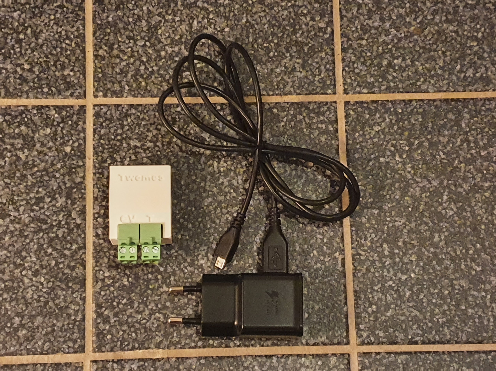
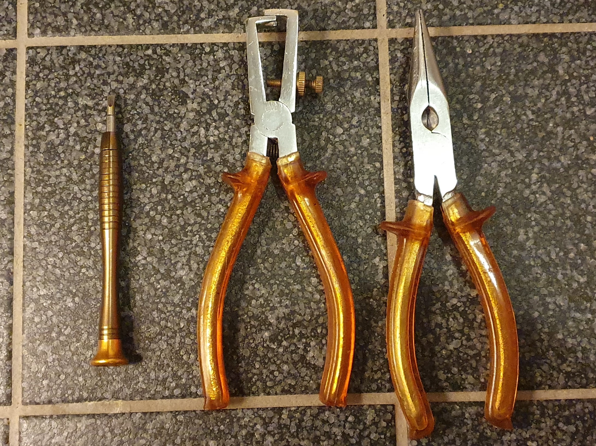
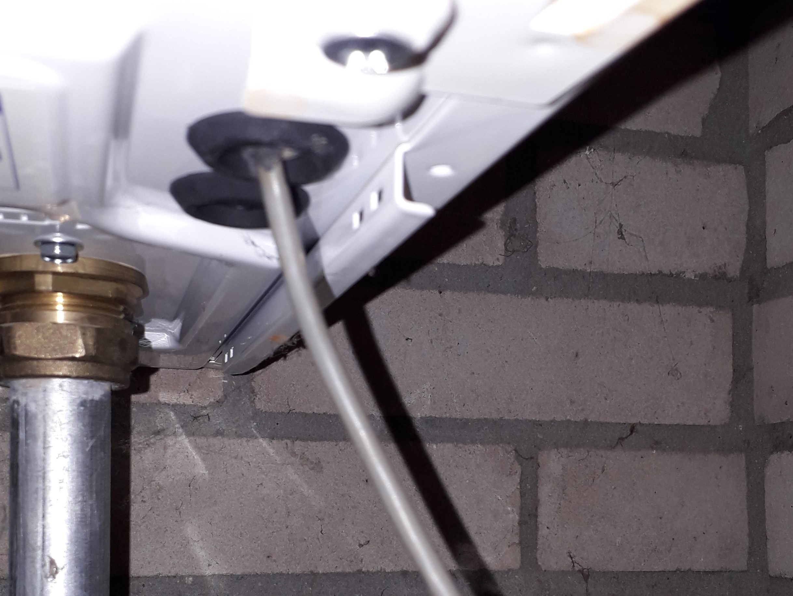
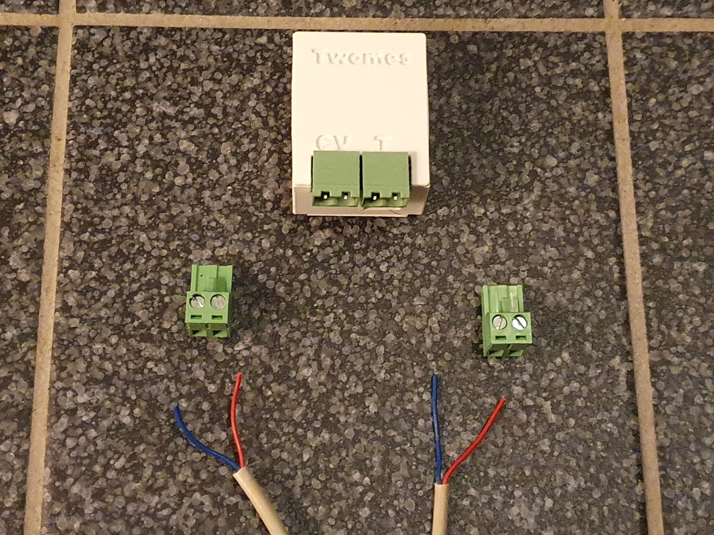
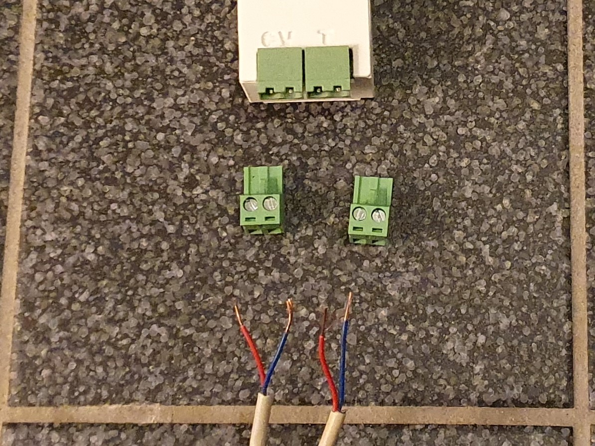
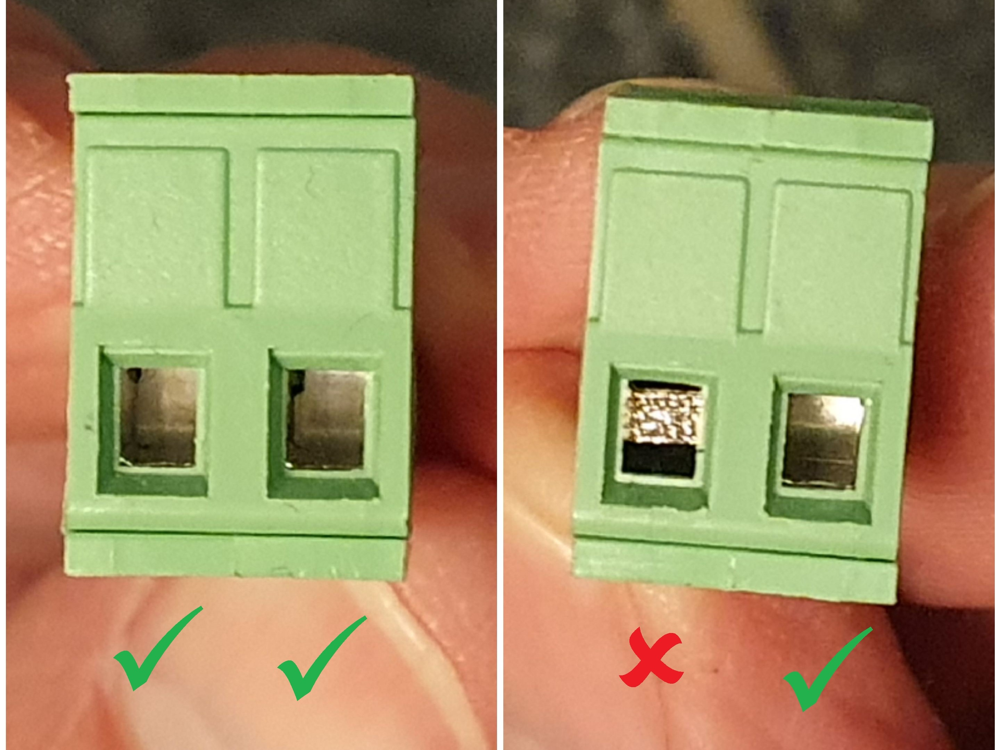
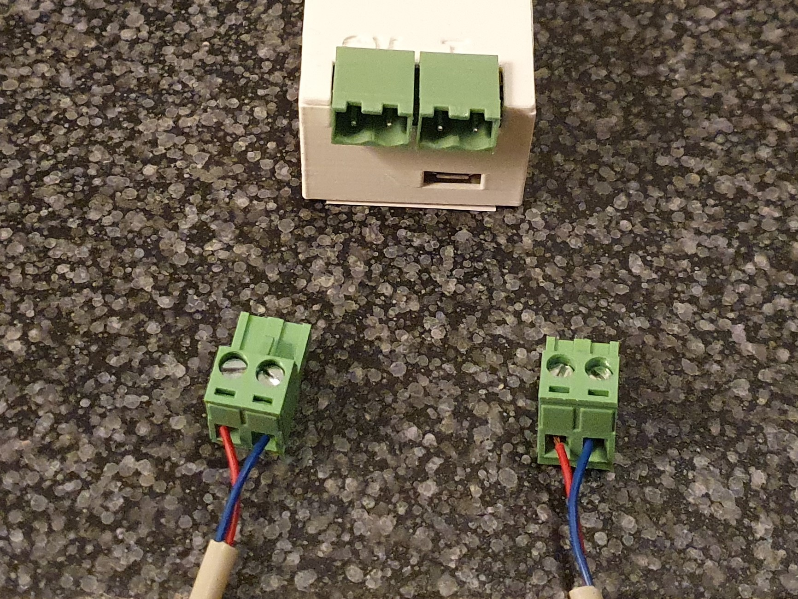
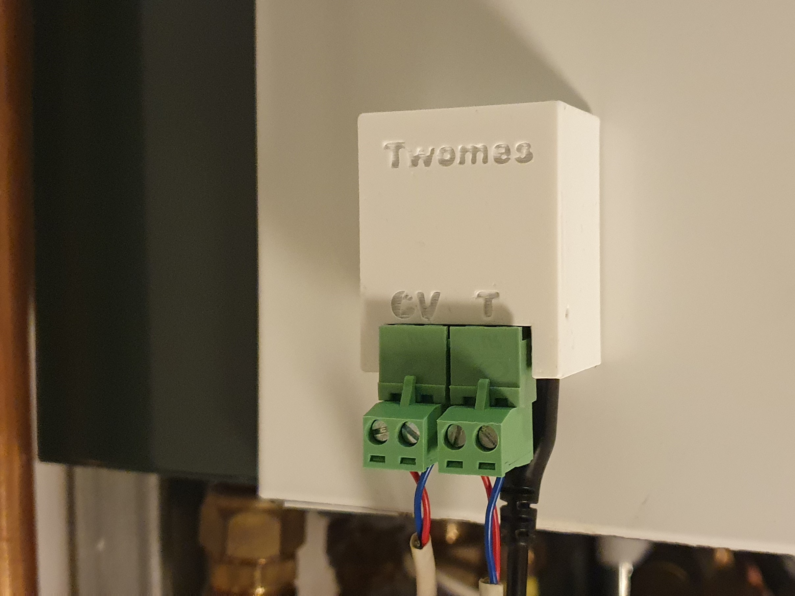

Volg deze aanwijzingen:
Scrol naar beneden voor meer!
Druk niet direct op de groene knop onderaan dit scherm, maar volg eerst onderstaande aanwijzingen.

U hebt zonet de QR-code gescand van een Twomes OpenTherm Monitor, een meetapparaatje dat meeluistert naar de communicatie tussen uw cv-ketel en thermostaat.
We helpen u met aanwijzingen hoe u het apparaatje installeert bij uw cv-ketel. Als u een stekker aan een draad kunt vastzetten, kunt u dit ook. Deze klus kost u ca. 5 tot 15 minuten.
We gaan u vragen om een draadje door te knippen, maar wees gerust, de Twomes OpenTherm Monitor is zo ontworpen dat het alleen maar meeluistert 'op de lijn' tussen uw thermostaat en cv-ketel. Mocht u na het lezen van deze aanwijzingen nog vragen hebben, kijk dan eerst even bij de meest gestelde vragen. Daar ziet u ook hoe u hulp kunt krijgen mocht u er toch niet uitkomen.
Gereedschap

- - Schroevendraaier (platte kop, 3 mm)
- - Draadstriptang (of mesje; voorzichtig!)
- - Kniptang
1. Netstekker(s) eruit
- a. Haal de stekker van uw cv-ketel uit het stopcontact.
- b. Als uw thermostaat voeding krijgt via een stekker of adapter, haal deze stekker dan ook uit het stopcontact.
2. OpenTherm Monitor aansluiten
- a. Zoek bij uw cv-ketel de signaalkabel die naar de thermostaat loopt. Deze vindt u doorgaans aan de onderzijde van de cv-ketel; het is niet de draad waar de netstekker aan zit maar de enige andere draad.

- b. Zoek een geschikte plek in de signaalkabel om deze door te knippen en de OpenTherm Monitor aan te sluiten. Zorg dat deze plek minder dan 1,5 m verwijderd is van een vrij stopcontact. Als er bij u tussen de cv-ketel en de thermostaat nog meer apparaatjes zitten aangesloten op de signaalkabel, kies dan de plek om de draad door te knippen aan de zijde van de cv-ketel.
- c. Knip de signaalkabel op deze plek door.
- d. Verwijder (met een draadstriptang) de buitenste mantel van beide kabel-einden over een lengte van ongeveer 2 cm. U ziet nu 4 aders; 2 per kabel-einde. Ziet u meer 3 of meer aders per kabel-einde? Volg dan deze aanwijzingen.

- e. Verwijder (met een draadstriptang) de laatste halve centimeter isolatie van elk van de 4 signaal-aders. U ziet nu 4 geleidende aders.
- f. Als de geleider bestaat uit vezels, draai deze dan lichtjes om elkaar, zodat de vezels niet uitsteken.

- g. Verwijder de groene stekkers van de OpenTherm Monitor en draai de aansluitklemmetjes met de schroevendraaier tegen de klok in helemaal open.
De opening moet helemaal vrij zijn; u mag het klemmetje niet meer zien. Hieronder ziet u een voorbeeld van 3 openingen die goed open staan. Bij één ziet u het klemmetje nog; dat moet dus nog verder open gedraaid worden.

- h. Steek de geleidende adereinden van de twee gekleurde signaaldraadjes van één kabeleinde in de aansluitklemmetjes van één groene stekker: één draadje per aansluitklemmetje (het maakt niet uit welk draadje u links of rechts aansluit). Draai de aansluiklemmetjes met de schroevendraaier met de klok mee dicht, totdat u voelt dat de draadjes beide goed vast zitten.
- i. Herhaal de stap hiervoor, maar dan met het andere kabeleinde en de andere groene stekker.

- j. Steek de groene stekker van de kabel die naar de cv-ketel gaat in de groene aansluiting van de OpenTherm Monitor waar `cv` bij staat. Steek de groene stekker van de kabel die naar de thermostaat gaat in de groene aansluiting van de OpenTherm Monitor waar 'T' bij staat.
Er gaat niks stuk als u dit per ongeluk verwisselt.
- k. Sluit de meegeleverde voedingsadapter aan: steek de micro-USB-stekker van de voedingskabel in de micro-USB aansluiting van de OpenTherm Monitor (past maar op één manier), steek de USB-stekker in de voedingsadapter en steek tenslotte de voedingsadapter in een vrij stopcontact.
- m. Klik nu de magnetische achterkant van de OpenTherm Monitor tegen een verticale metalen zijwand van de cv-ketel. Als het niet goed blijft zitten, laat de module dan niet bungelen aan de draadjes, maar bevestig hem dan op een andere manier.

3. Netstekker(s) terugplaatsen
- a. Steek de stekker van uw cv-ketel weer in het stopcontact.
- b. Als u bij stap 1 nog een stekker uit het stopcontact had gehaald (van de thermostaat of cv-ketelmodule van de thermostaat), steek deze dan ook weer in het stopcontact.
Als alles goed is aangesloten, werken uw cv-ketel en thermostaat weer en ziet u ongeveer elke seconde een rood en blauw lampje knipperen op de OpenTherm Monitor vlak bij de groene aansluitingen. Ook ziet u dan dat uw thermostaat weer normaal werkt.
Als dat niet het geval is, ga dan weer naar stap 1 van deze installatiehandleiding, loop stap 2 en stap 3 nog een keer na. Werkt het nog niet? Kijk kan bij de meest gestelde vragen.
4. Zorg dat bluetooth aan staat
Zorg dat bluetooth op uw smartphone aanstaat. Dit is nodig voor de volgende stap.
Als u de OpenTherm Monitor goed hebt aangesloten en geplaatst, druk dan op de knop "Ok, heb ik gedaan", hieronder.